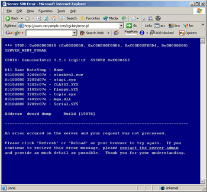

SimpleSecure: TroubleShooting
SimpleSecure: TroubleShooting
 SERVER ERROR: Server 500 Error:
A server 500 error means that the script failed to compile correctly. A 500 error basically means "Unknown Error" and so, there are many possible causes. Here are the top causes for a 500 error.
The best way to trouble-shoot is to login to the server via SSH and execute the script from the command line. The perl interpreter should give you more details about the error and allow you to fix it.
So that you don't spend time chasing the wrong problem, below are some things that gererally do NOT cause 500 errors:
Script Error: Could not write/open file:
SimpleSecure has error checking to make sure it can read/write from it's datafiles. If you receive an error about a permission problem, then you must correct it on the server. The script should generally tell you which file it tried to read/write and that should help you to fix the problem.
PGP/GPG: Encryption Errors:
The possible causes of GPG/PGP errors are so numerous that it is impossible to get into them here. Generally the encrypted email message will contain some information that could help you to debug the problem.
If you have a PGP/GPG attachment and it doesn't decrypt sucessfully, try opening it in Notepad. When an encryption error occurs, instead of the expected PGP data, the attachment will actually contain text with error details.
Installation Service:
If you are not able to resolve your installation problems, verysimple is pleased to offer a fee-based SimpleSecure encrypted email installation service. We will get your secure email system working on both the client and the server and have you receiving secure messages in one business day. For more details, please visit us on the web.
© copyright 1997-2004, verysimple, inc.